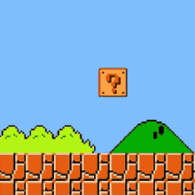

<html lang="en">
<head>
    <meta charset="UTF-8">
    <meta name="viewport" content="width=device-width, initial-scale=1.0">
    <meta http-equiv="X-UA-Compatible" content="ie=edge">
    <title>Who we be</title>

    <script src="scratchcard.min.js"></script>
    <style>
      .sc__inner {
        position: relative;
        top: 0;
        left: 0;
        width: 100%;
        height: 100%;
      }
      .sc__wrapper {
        display: block;
        width: 100%;
        height: 464px;
        max-width: 300px;
        margin: 0 auto;
        border: 5px solid white;
      }

      .sc__container {
        position: relative;
        overflow: hidden;
        height: 464px;
        max-width: 300px;
      }

      .sc__container > img {
        position: relative;
        top: 0;
        left: 0;
        width: 100%;
        height: auto;
      }

      .sc__container canvas {
        position: absolute;
        top: 0;
        left: 0;
        width: 100%;
        height: auto;
      }

      .sc__infos {
        text-align: center;
        height: 40px;
        line-height: 40px;
        margin-top: 5px;
        font-weight: bold;
        font-size: 18px;
      }

      body {
        cursor: url(images/coin_cursor4.png) 6 20, pointer;
      }
    </style>
  </head>
  <body>
    <div class="sc__wrapper" id="sc__wrapper">
      <!-- scratchcard -->
      <div id="js--sc--container" class="sc__container">
          <!-- background image insert here by scratchcard-js -->
          <!-- canvas generate here -->
      </div>
  </div>
  </body>

  <script>
    const scContainer = document.getElementById('js--sc--container')
    const scInfos = document.querySelector('.sc__infos');
    const sc = new ScratchCard('#js--sc--container', {
      scratchType: SCRATCH_TYPE.LINE,
      containerWidth: scContainer.offsetWidth,
      containerHeight: 464,
      imageForwardSrc: 'images/3.svg',
      imageBackgroundSrc: 'images/4.svg',
      htmlBackground: '',
      clearZoneRadius: 2,
      percentToFinish: 7,
      nPoints: 0,
      pointSize: 0,
      callback: function () {
        nextStep();
      }
    })

    // Init
    sc.init().then(() => {
      sc.canvas.addEventListener('scratch.move', () => {
        let percent = sc.getPercent().toFixed(0);
        //scInfos.innerHTML = percent + '%';
        console.log(percent);
        if (percent >= 5) {
          nextStep();
        }
      })
    }).catch((error) => {
      // image not loaded
      alert(error.message);
    });

    function nextStep() {
      var el = document.getElementById('sc__wrapper');
      el.innerHTML = '';
      el.innerHTML = '';
      //console.log("done: " + sc.getPercent().toFixed(0));
    }
  </script>
</html>